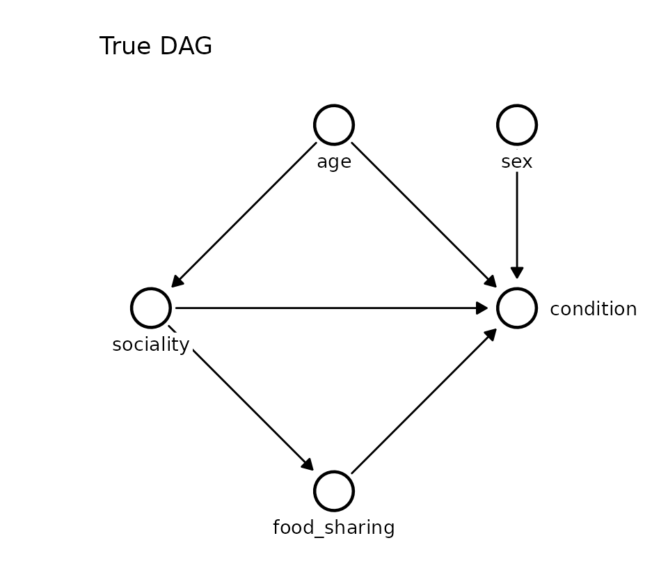
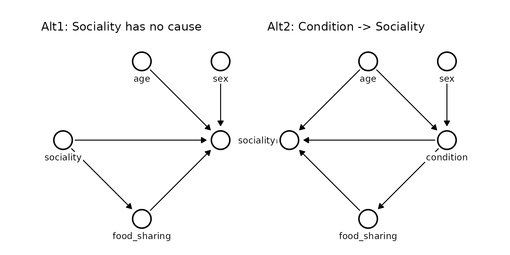
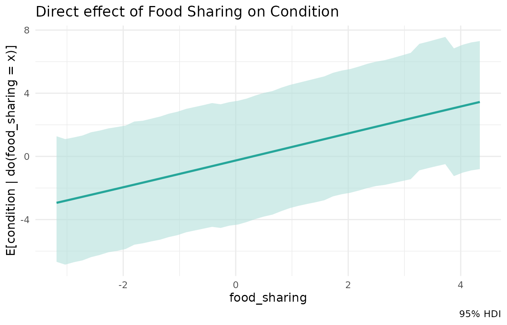
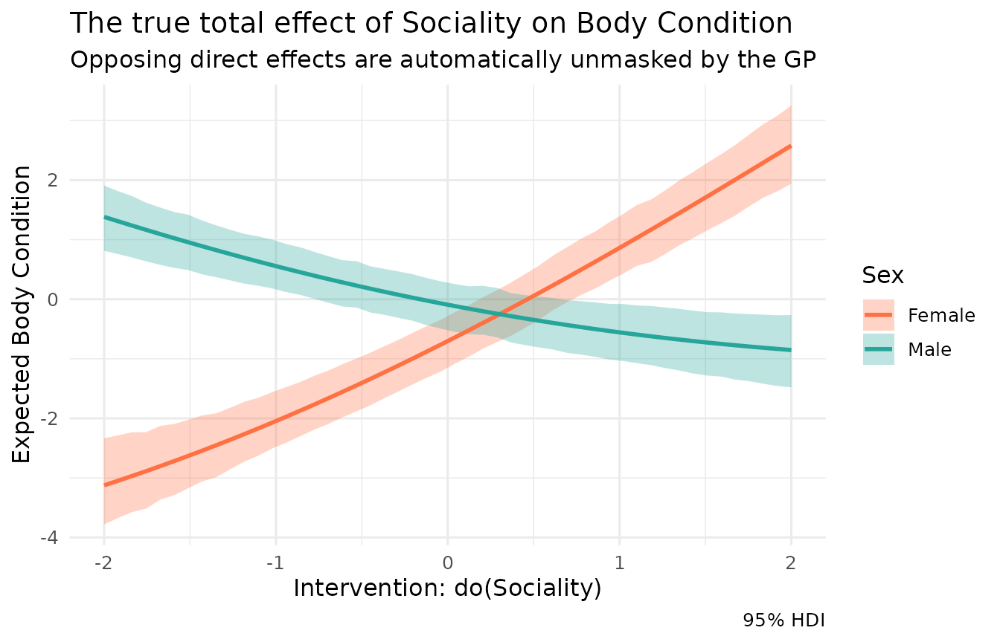

Case study: Sociality and fitness in ecology
Source:vignettes/ecology_case_study.Rmd
ecology_case_study.RmdIn this vignette, we explore a classic observational study in behavioural ecology. We’ll use Kagu to perform causal discovery, estimate effects, unmask hidden interactions, and avoid the notorious “Table II fallacy” common in traditional regression.
The study system
Imagine a long-term field study of a social mammal population (e.g., macaques, dolphins, or elephants). We have collected observational data on 50 individuals - a small, noisy field dataset typical of hard-to-observe wild populations - measuring five variables:
-
age: Age of the individual (standardised). -
sex: Female (-1) or Male (1). -
sociality: A continuous index of social network centrality. -
food_sharing: The rate at which the individual participates in cooperative food sharing. -
condition: Body condition index (e.g., girth-to-length ratio; a proxy for fitness).
The true causal structure
We simulate the data based on expert domain knowledge of the species:
- Age \(\to\) Sociality: Older individuals have had more time to establish social bonds.
-
Age \(\to\)
Condition: Older individuals are more experienced foragers,
directly improving their condition independent of sociality. This makes
agea confounder of the sociality-condition relationship. - Sociality \(\to\) Food sharing: More central individuals share food more often.
-
Food sharing \(\to\)
Condition: Receiving shared food directly improves caloric
intake and body condition. This makes
food_sharinga mediator on the path from sociality to condition. - Sex \(\to\) Condition: Males and females differ in baseline condition due to sexual dimorphism.
- Sociality \(\to\) Condition (Direct, interacting with Sex): Sociality also directly affects condition through stress buffering (e.g., lower cortisol). However, this effect is highly sex-dependent. For females, sociality means allomaternal support and reduced stress (positive effect). For males, sociality means proximity to competitors and higher agonistic stress (negative effect).
Let’s simulate 50 individuals from this exact process:
n <- 50
sex <- sample(c(-1, 1), n, replace = TRUE)
age <- rnorm(n)
# Sociality and food sharing are measured with substantial noise, which is what
# leaves the direction of the sociality -> food_sharing edge genuinely uncertain.
sociality <- 0.5 * age + rnorm(n, sd = 1.5)
food_sharing <- 0.8 * sociality + rnorm(n, sd = 1.5)
# The direct effect of sociality is +1.0 for females (sex = -1) and -1.0 for males (sex = 1)
# We simulate this via the interaction term: -1.0 * sex * sociality
condition <- 0.5 * age + 0.5 * sex + 0.8 * food_sharing - 1.0 * sex * sociality + rnorm(n, sd = 0.5)
df <- data.frame(age, sex, sociality, food_sharing, condition)We can visualise the true proposed causal graph:
dag_true <- list(
age = c(),
sex = c(),
sociality = "age",
food_sharing = "sociality",
condition = c("age", "sex", "sociality", "food_sharing")
)
# Fix the node positions for visual consistency across plots
node_pos <- list(
age = c(1, 1),
sex = c(1, 2),
sociality = c(2, 0),
food_sharing = c(3, 1),
condition = c(2, 2)
)
kagu_plot_dag(dag_true, node_pos) + ggtitle("True DAG")
Causal Discovery
Before estimating effects, researchers often want to verify their causal graph against alternative hypotheses.
Suppose a reviewer suggests two alternative models: 1.
Alt1: Sociality has no measured cause - the apparent
age → sociality link is just noise. 2. Alt2:
Body condition causes sociality (healthier individuals have more energy
to socialize).
dag_alt1 <- list(
age = c(),
sex = c(),
sociality = c(),
food_sharing = "sociality",
condition = c("age", "sex", "sociality", "food_sharing")
)
dag_alt2 <- list(
age = c(),
sex = c(),
condition = c("age", "sex"),
food_sharing = "condition",
sociality = c("age", "food_sharing", "condition")
)
library(patchwork)
kagu_plot_dag(dag_alt1, node_pos) + ggtitle("Alt1: Sociality has no cause") +
kagu_plot_dag(dag_alt2, node_pos) + ggtitle("Alt2: Condition -> Sociality")
We can use Kagu’s causal discovery engine to score our theoretically proposed DAG against these alternatives. Kagu evaluates the full joint marginal likelihood of the non-linear Gaussian Process fits.
# Pass the specific DAGs to discover over. Naming them means the summary table
# refers to each structure by name; unnamed DAGs get ids "A", "B", "C", ... and
# can be inspected with res$get_dag(id) / res$plot_dag(id).
res <- KaguModel$discover(
df,
dags = list("True" = dag_true, "Alt 1" = dag_alt1, "Alt 2" = dag_alt2)
)
res$summary()
#> # A tibble: 3 × 5
#> rank id n_edges log_marglik posterior_prob
#> <int> <chr> <int> <dbl> <dbl>
#> 1 1 True 6 -296. 8.34e- 1
#> 2 2 Alt 1 5 -298. 1.66e- 1
#> 3 3 Alt 2 6 -335. 7.10e-18Kagu places most of the posterior (~83%) on dag_true,
but crucially it does not claim certainty.
Alt2 - the hypothesis that body condition causes
sociality - is decisively rejected (~0%): reversing those edges
contradicts the strong, non-linear signature that sex,
sociality and food_sharing jointly leave in
condition. But Alt1, which drops the single
age → sociality edge (claiming sociality has no measured
cause), still retains ~17% of the posterior. With only 50 noisy
individuals the weak influence of age on sociality is genuinely hard to
detect, and Kagu reports that ambiguity honestly rather than papering
over it.
Two things are worth noting. First, the parents of
condition are pinned down with near-certainty across every
competitive structure - the strong sex * sociality
interaction gives the GP a non-linear signature that no reversal of
those edges can mimic. Second, the posterior-over-DAGs framing carries
the residual structural uncertainty forward rather than discarding it,
so we can go on to estimate effects while remaining appropriately humble
about which structure generated the data.
The Table II fallacy
Now that we are reasonably confident in the structure, we fit it with Kagu so we can interrogate the graph directly:
mod <- KaguModel$new(dag_true)
mod$fit(df)Our primary question is the total effect of sociality on
condition. Done carefully with a regression, we adjust for
the confounder age and, correctly, leave the mediator
food_sharing out of the model:
summary(lm(condition ~ sociality + age + sex, data = df))$coefficients
#> Estimate Std. Error t value Pr(>|t|)
#> (Intercept) -0.01925162 0.2589181 -0.07435407 0.94105106
#> sociality 0.10875672 0.1816107 0.59884544 0.55221379
#> age 0.61497785 0.2808704 2.18954307 0.03366777
#> sex 0.39141862 0.2596293 1.50760547 0.13849324This model is correctly specified for the question it was built to answer. The temptation is then to read every row of the table as “the effect of that variable on condition.” That is the Table II fallacy (Westreich & Greenland, 2013): the coefficients in a single table are not the same kind of quantity.
-
socialityis the estimand the study was designed for – its population-average total effect on condition – because we adjusted correctly for it. -
ageis not age’s total effect. It is age’s effect holding sociality fixed: the direct effect, which throws away age’s influence that runs through sociality (older animals are more social, and sociality feeds condition). Age’s total effect is larger. -
sexmodifies the effect of sociality (thesex * socialityinteraction), so no single “main effect” number for sex can be read as “the effect of sex.”
Kagu makes the distinction concrete. Asked for age’s total
effect, it propagates through the whole graph, including the
age → sociality → condition path:
mod$effects("age", "condition", hdi = 0.95)$summary()
#> # A tibble: 1 × 8
#> source target from to mean sd hdi_lower hdi_upper
#> <chr> <chr> <dbl> <dbl> <dbl> <dbl> <dbl> <dbl>
#> 1 age condition -0.0581 0.942 0.987 0.318 0.435 1.63The total effect (mean \(\approx 1.0\)) is larger than the regression’s age coefficient (\(\approx 0.6\)): the difference is precisely the indirect path through sociality that the coefficient leaves out. Same data, same graph, but a different question and a different answer. With only 50 individuals both estimates are uncertain, yet the distinction between them is structural, not statistical.
It can be worse still. An adjustment variable with its own unmeasured confounder gives a coefficient that is not merely the wrong estimand but outright confounded; Westreich & Greenland give the full taxonomy. The remedy is the same in every case: decide which estimand you want for each variable and let the graph deliver it, rather than reading a regression table as a list of interchangeable “effects” – which is exactly what Kagu does next.
Estimating the true effects with Kagu
The model is already fitted, so we can query any estimand we like
from the same graph. Take the one the regression targeted – the total
effect of sociality on condition – where Kagu
adjusts for the confounder age and integrates out
the mediator food_sharing via the do-operator, carrying the
full posterior:
# The average total effect of a 1-unit increase in sociality
mod$effects("sociality", "condition", hdi = 0.95)$summary()
#> # A tibble: 1 × 8
#> source target from to mean sd hdi_lower hdi_upper
#> <chr> <chr> <dbl> <dbl> <dbl> <dbl> <dbl> <dbl>
#> 1 sociality condition -0.0910 0.909 0.384 0.231 -0.0603 0.844The point estimate is modestly positive (~0.38), but the 95% HDI is very wide and straddles zero. This is not a failure - it is Kagu being honest. The population-averaged total effect is pulled in two directions at once: the food-sharing mediation contributes a positive push, while the direct effect of sociality is strongly positive in females and strongly negative in males, so on average it nearly cancels and mostly inflates the spread. A single population-averaged number is therefore almost meaningless here; the wide HDI is Kagu’s way of telling us the effect is highly heterogeneous across the population. In the next section we split it apart by sex to reveal exactly what that average conceals.
Examining the mediator
We can also easily query multiple different effects from the same fitted model. For instance, what is the direct effect of our mediator, food sharing?
mod$effects("food_sharing", "condition", hdi = 0.95)$summary()
#> # A tibble: 1 × 8
#> source target from to mean sd hdi_lower hdi_upper
#> <chr> <chr> <dbl> <dbl> <dbl> <dbl> <dbl> <dbl>
#> 1 food_sharing condition -0.194 0.806 0.854 0.0920 0.692 1.05
mod$effects("food_sharing", "condition", sweep = TRUE, hdi = 0.95)$plot() +
ggtitle("Direct effect of Food Sharing on Condition")
The model recovers the direct effect of food sharing (\(\approx 0.85\) here - close to the true value of 0.8, correctly identified as the strongest single pathway, and the one coefficient the flawed linear table got roughly right!).
Unmasking the interaction
Because Kagu models each node as a Gaussian Process, it has already
learned the sex * sociality interaction automatically. We
can visualise the true, divergent effects of sociality by using a
sweep and passing a list of conditions.
eff_multi <- mod$effects(
source = "sociality",
target = "condition",
sweep = TRUE,
hdi = 0.95,
# Sweep over the well-supported central range (sociality has sd ~1.5); going
# far into the sparse tails just shows the GP reverting to its prior.
sweep_range = c(-2, 2),
conditions = list(
list(sex = -1), # Females
list(sex = 1) # Males
)
)
eff_multi$plot() +
scale_color_manual(values = c("sex=-1" = "#ff7043", "sex=1" = "#26a69a"),
labels = c("Female", "Male")) +
scale_fill_manual(values = c("sex=-1" = "#ff7043", "sex=1" = "#26a69a"),
labels = c("Female", "Male")) +
labs(
title = "The true total effect of Sociality on Body Condition",
subtitle = "Opposing direct effects are automatically unmasked by the GP",
x = "Intervention: do(Sociality)",
y = "Expected Body Condition",
color = "Sex", fill = "Sex"
)
The diverging plot reveals exactly what the classic regression table hid: sociality has a massive effect on body condition for both sexes. For females, the stress-buffering benefits of sociality compound with the food-sharing benefits, resulting in a steep positive slope. For males, the costs of agonistic competition overwhelm the food-sharing benefits, resulting in a negative slope.
We can read off the same story quantitatively by querying the conditional (per-sex) total effect directly:
mod$effects("sociality", "condition", conditions = list(sex = -1), hdi = 0.95)$summary() # Females
#> # A tibble: 1 × 8
#> source target from to mean sd hdi_lower hdi_upper
#> <chr> <chr> <dbl> <dbl> <dbl> <dbl> <dbl> <dbl>
#> 1 sociality condition -0.0910 0.909 1.44 0.142 1.16 1.71
mod$effects("sociality", "condition", conditions = list(sex = 1), hdi = 0.95)$summary() # Males
#> # A tibble: 1 × 8
#> source target from to mean sd hdi_lower hdi_upper
#> <chr> <chr> <dbl> <dbl> <dbl> <dbl> <dbl> <dbl>
#> 1 sociality condition -0.0910 0.909 -0.572 0.121 -0.789 -0.329For females the effect is strongly positive (\(\approx 1.4\)), for males strongly negative (\(\approx -0.6\)) - two large, opposing effects that the population-averaged estimate above (and the linear regression table) washed out to near zero.
Why classic model selection fails
To drive this point home, let’s see what happens if a researcher
realizes their basic linear model was inadequate and attempts to rely
purely on data-driven model selection (like step-wise AIC) to find the
“best” model for condition.
# Try all possible main effects and 2-way interactions
full_model <- lm(condition ~ (age + sex + sociality + food_sharing)^2, data = df)
# Use step-wise AIC to find the best model
best_lm <- step(full_model, trace = FALSE)
summary(best_lm)$coefficients
#> Estimate Std. Error t value Pr(>|t|)
#> (Intercept) -0.10518871 0.06828718 -1.540387 1.307935e-01
#> age 0.60368934 0.06888731 8.763433 4.044857e-11
#> sex 0.29804661 0.06231479 4.782920 2.054145e-05
#> sociality -0.05597326 0.05490741 -1.019412 3.137090e-01
#> food_sharing 0.82411489 0.04782411 17.232205 6.380261e-21
#> sex:sociality -1.02705168 0.04593807 -22.357312 2.653017e-25
#> sociality:food_sharing 0.05055655 0.01948286 2.594925 1.288911e-02Even though the AIC algorithm successfully detected the strong
sex:sociality interaction and correctly rejected the
simpler linear models, the coefficients from this “best” model are
deeply misleading for causal inference:
- Because
food_sharing(the mediator) was retained as a predictor by the AIC algorithm, the basesocialitycoefficient (\(\approx -0.06\)) is entirely stripped of its indirect pathway. - If the researcher takes the
food_sharingcoefficient (\(\approx 0.82\)) and treats it as the causal effect of food sharing, they are committing the Table II Fallacy. The variables chosen by AIC to optimally predictconditionare fundamentally not the correct adjustment set for estimating the causal effect offood_sharing.
Kagu avoids all of this by explicitly separating the causal structure (the DAG) from the functional form (the GPs). It discovers the interactions automatically to identify the structure, and then rigorously applies Do-calculus to estimate the exact marginal or conditional effects without falling into the Table II trap!